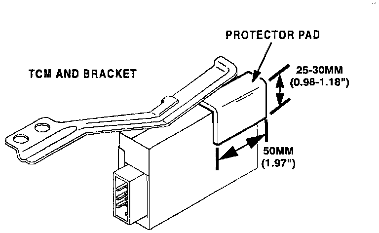

Transmission Control Module - Protector Pad Application
Bulletin No.: 011/98Issued: 10/22/98
Revised:
Category
K (05)
Applicable Model/s
1999 Miata
Subject
TRANSMISSION CONTROL MODULE (TCM)
PROTECTOR PAD APPLICATION
APPLICABLE MODEL(S)/VINS
All 1999 Miata with A/T.
DESCRIPTION
When replacing a TCM, be sure to install a protector pad onto it. This will ensure that it will not come in contact with surrounding parts and possibly causing an unusual noise such as a rattle. These protector pads are already installed on all mass production units, however, they are not applied on service pans.
Therefore, when replacing a TCM, be sure install a protector pad using the following procedure.
INSTALLATION PROCEDURE

1. Previous to installing the TCM service part in the vehicle, install the protector pad using the specifications as shown.
2. Install the TCM and attach the TCM connector per the Workshop Manual section 5-13.
Note
^ Before starting the vehicle, be sure to reconnect the TCM connector to the TCM. If vehicle is started without PCM harness connected, the engine light may illuminate and DTC P0160 may be stored in memory.
PART(S) INFORMATION
Part Number Description Qty. Note(s)
S001-67-153 Protector 1 ---